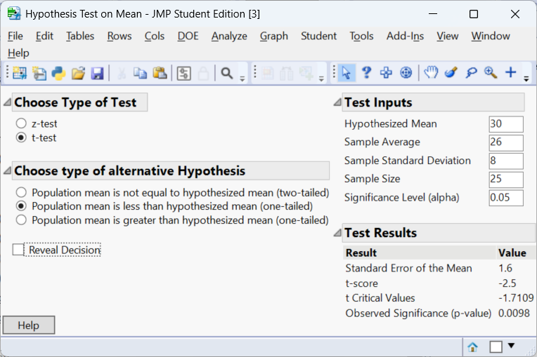
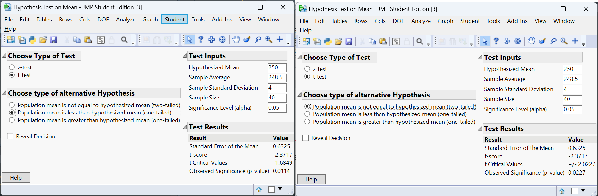
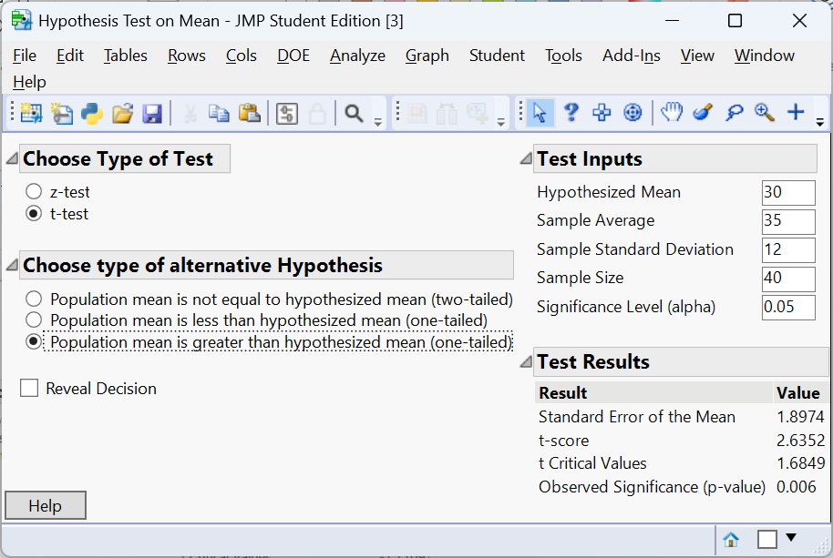
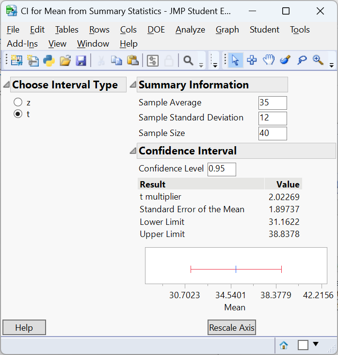

t
-0.9116943 [1] 0.1831966“If you do not know how to ask the right question, you discover nothing.” – W. E. Deming
Guiding question: What is a hypothesis, and how do we test it?
Any statistical test begins with a claim about an unknown population parameter. That claim, called a
Hypotheses come in pairs: a
The null hypothesis (denoted \(H_0\)) states that there is no effect, no difference, or no change in the population. It often represents the status quo or “nothing is happening.”
The alternative hypothesis (\(H_a\)) states that there is an effect or difference, typically what the researcher hopes to demonstrate. In a hypothesis test we start by assuming the null hypothesis is true and ask whether our sample provides enough evidence to reject it. Because samples are subject to chance, our decisions are based on probabilities rather than certainties.
In a legal analogy, the null hypothesis is like the presumption of innocence. A jury does not “prove” innocence; it either convicts (rejects the null) or fails to convict (fails to reject the null). Similarly, in statistics we never accept \(H_0\); we simply fail to reject it when the evidence is weak. This language reminds us that a test can be wrong either way (see the next section).
To construct a test, identify the parameter of interest and write down competing statements about it:
Researchers develop a new cholesterol-lowering drug and want to know if it reduces LDL cholesterol more than the current standard. Let \(\mu\) be the mean reduction in LDL. The hypotheses are
\[ \begin{align*} H_0&: \mu = 0 \quad\text{(no average reduction)}\\\quad H_a&: \mu > 0 \quad\text{(mean reduction is positive)} \end{align*} \]
Here the alternative is one-sided because the investigators care only about increases in reduction. They will look for evidence that the mean change is greater than zero.
A geneticist compares the average expression level of a gene in treated cells versus control cells. Let \(\mu_T\) and \(\mu_C\) be the mean expression levels. If the goal is simply to detect any difference, the hypotheses are
$$
H_0: _T - _C = 0 \ H_a: _T - _C $$
This is a two-sided alternative: the gene could be up-regulated or down-regulated, and both possibilities matter.
A manufacturer packages coffee beans labelled “500 g.” Customers suspect the packages may weigh less than advertised. Let \(\mu\) be the true mean weight. The hypotheses become
\[ \begin{align*} H_0&: \mu = 500 \\ H_a&: \mu < 500 \end{align*} \]
Notice that \(H_a\) is one-sided (\(<\)). If sample data show strong evidence that the mean is lower than 500 g, the company may need to adjust its filling process.
In each example we clearly separate the null (no change) from the alternative (change in a specified direction). Remember that a test never
| Keyword/Concept | Definition |
|---|---|
| Hypothesis | A claim about a population parameter that can be tested using sample data. |
| Null hypothesis (\(H_0\)) | A statement of no effect or no difference; the hypothesis assumed true as the starting point of a test. |
| Alternative hypothesis (\(H_a\)) | The statement researchers hope to support; it suggests a parameter is different (greater, less, or not equal) from the null value. |
Let \(\mu_D\) be the mean reduction in systolic blood pressure (drug minus placebo). The company’s claim is that the reduction is at least 5 mmHg, so we test
\[ H_0: \mu_D = 5 \quad \text{vs.} \quad H_a: \mu_D > 5. \]
Here \(H_a\) is one-sided because we care only about reductions greater than 5 mmHg. If sample evidence shows the mean reduction exceeds 5 by more than can be attributed to chance, we will reject \(H_0\).
Let \(\mu_1\) and \(\mu_2\) be the mean heights under fertilizers 1 and 2. The botanist’s belief is equality, so the null hypothesis is \(H_0:\mu_1 - \mu_2 = 0\). The alternative is that they differ: \(H_a:\mu_1 - \mu_2 \neq 0\). This is a two-sided alternative because we do not know which treatment might produce taller plants.
We do not accept \(H_0\) because failing to reject it does not prove it is true. A small sample might lack power to detect a real difference, so we can only say the data do not provide strong evidence against \(H_0\). Using the language “fail to reject” reminds us that all conclusions are tentative and based on limited information.
“I can prove anything by statistics except the truth.” – George Canning
Guiding question: What do Type I and Type II errors really mean?
Whenever we base a decision on a sample, there is a chance of making an error. In hypothesis testing there are two kinds of error:
A
For example, in a clinical trial we might incorrectly conclude that a new drug improves symptoms when in reality it does not.
The probability of a Type I error is denoted by \(\alpha\), the
A
For instance, we might conclude that a drug doesn’t improve symptoms when in truth it does. The probability of a Type II error is \(\beta\). The test’s
Controlling \(\alpha\) makes Type I errors rare, but it increases the risk of Type II errors (and vice versa). A large sample size, clear alternative hypothesis, and good experimental design can increase power and reduce \(\beta\).
| Keyword/Concept | Definition |
|---|---|
| Type I error | Rejecting the null hypothesis when it is actually true; a false positive. Its probability is the significance level \(\alpha\). |
| Type II error | Failing to reject the null hypothesis when the alternative is true; a false negative. Its probability is denoted \(\beta\). |
| Significance level (\(\alpha\)) | The probability of committing a Type I error. It is chosen by the researcher before data are collected (common values are 0.05 or 0.01). |
| Power (\(1-\beta\)) | The probability of correctly rejecting the null hypothesis when the alternative is true. Power increases with sample size, effect size, and higher significance level. |
In criminal justice we usually prefer to err on the side of not convicting an innocent person. A Type I error (convicting the innocent) is considered worse than a Type II error (acquitting the guilty). Choosing a very small \(\alpha\) makes false convictions rare, though it increases the chance that some guilty people go free.
A Type I error means concluding that the mean diameter differs from 5 mm when it actually equals 5 mm. This might lead to unnecessary machine adjustments or wasted product. A Type II error means concluding that the mean is 5 mm when it is not; defective screws may reach customers. Depending on regulatory requirements, the latter error could be more costly, so the engineer may accept a slightly higher \(\alpha\) to reduce \(\beta\).
“A common misconception is that an effect exists only if it is statistically significant and that it does not exist if it is not.” – Jonas Ranstam
Guiding question: How do p-values guide our decisions?
Once the hypotheses are set, we quantify the evidence against the null hypothesis using a
From this statistic we compute a
Suppose we test \(H_0:\mu=0\) versus \(H_a:\mu>0\) and obtain a p-value of 0.03. This p-value means that if the true mean were zero, there is a 3% chance of obtaining a sample mean as large (or larger) than what we observed. Because such data are unlikely under \(H_0\), we consider rejecting \(H_0\). Importantly, a p-value is not the probability that the null is true; it is conditional on \(H_0\) being true. Small p-values provide evidence against \(H_0\), but they do not measure the size or importance of an effect.
To make a decision, we compare the p-value to the
Imagine a pharmaceutical company claims its headache medication provides immediate relief. Historically the mean time to relief is 30 minutes. In a sample of 25 patients using the new formulation, the sample mean time is 26 minutes with a standard deviation of 8 minutes. We want to test
\[ H_0:\mu = 30\quad\text{versus}\quad H_a:\mu < 30 \]
at \(\alpha=0.05\). The null hypothesis asserts no improvement; the alternative suggests the new drug works faster. A one-sample t-test provides the test statistic and p-value. The JMP output below shows the results.

The resulting p-value will be compared to 0.05. If it is less than 0.05, we conclude that the data provide significant evidence that the new drug shortens the time to relief. Otherwise we fail to reject \(H_0\). For this example, the p-value is 0.0098. Thus we reject \(H_0\) and conclude that there is enough evidence to conclude the mean time to relief is less than 30 minutes.
Statistical significance tells us whether the data provide enough evidence to reject a null hypothesis.
A p-value alone cannot answer this second question. In particular, large samples can produce very small p-values for effects that are trivial in practice, while small samples may yield non-significant p-values despite substantial differences. To assess practical significance you need subject-matter expertise and, often, a pre-defined smallest effect size of interest.
For example, if an educational program needs to improve test scores by at least 5 points to justify its cost, a statistically significant 3-point increase would not be practically significant. Similarly, in medicine a reduction of 2 mmHg in blood pressure might achieve a tiny p-value when measured in thousands of patients, but clinicians may deem it too small to change practice.
One way to gauge the magnitude and precision of an effect is to report its confidence interval. A confidence interval provides a range of plausible values for the population effect size. Because it incorporates sampling variability, a CI tells us not only whether an effect exists but also how large it might be. When the entire interval lies above (or below) the threshold for practical importance, we can be more confident that the effect is both statistically and practically meaningful. If the interval straddles this threshold, the study’s estimate is imprecise: the true effect may or may not be large enough to matter. In contrast, if the CI includes zero, the data are compatible with no effect at all, and we should not claim practical significance.
To illustrate, consider two studies evaluating the same training program. Both report a mean improvement of 9 points in test scores and both are statistically significant. Study A has a 95% confidence interval from 3 to 15 points. Since 3 points is below the 5-point threshold, we cannot rule out the possibility that the true effect is too small to be meaningful.
Study B has a 95% confidence interval from 7 to 11 points. Because the entire interval exceeds 5 points, we conclude that the improvement is both statistically and practically significant.
Confidence intervals focus attention on effect sizes and their uncertainty rather than just whether the p-value crosses a cutoff.
| Keyword/Concept | Definition |
|---|---|
| Test statistic | A numerical summary of the sample that measures how far the data deviate from what is expected under the null hypothesis. |
| p-value | The probability, under the null hypothesis, of obtaining a test statistic as extreme or more extreme than the one observed. |
| Significance level (\(\alpha\)) | A threshold chosen before the test that determines when to reject \(H_0\). If p-value < \(\alpha\), we reject \(H_0\). Common levels are 0.05, 0.01, and 0.10. |
| Statistical vs. practical significance | Statistical significance refers to small p-values; practical significance refers to whether the effect size is large enough to matter in context. |
Because 0.08 > 0.05, we fail to reject the null hypothesis at the 5 % level. The data do not provide strong evidence of a difference in mean yield. However, the observed difference might still be practically important—for example, if one variety yields 10% more—but the study may lack power. Researchers could collect more data or consider the cost/benefit of switching varieties.
A p-value of 0.001 means that if the true mean commute time were 20 minutes (the null), we would see an average as large (or larger) as the one observed only about 0.1% of the time. Such an extreme result is very unlikely under \(H_0\), so we have strong evidence that the average commute exceeds 20 minutes.
The p-value is computed assuming \(H_0\) is true; it measures the compatibility of the data with that assumption. It does not give the probability that \(H_0\) itself is true because hypotheses are statements about fixed parameters, not random events.
“As Confucius might have said, if the difference isn’t different enough to make a difference, what’s the difference?” – V. Chew
Guiding question: How do one-tailed and two-tailed tests differ?
When you write the alternative hypothesis you must decide whether it specifies a direction. If \(H_a\) asserts that a parameter is greater than or less than the null value, the test is
A one-tailed test asks whether a parameter is significantly higher or lower than the null value. For example, a company might test whether a new marketing campaign increases average sales. The hypotheses are \(H_0:\mu=\mu_0\) versus \(H_a:\mu>\mu_0\). Only values of the test statistic in one direction count as evidence against \(H_0\).
Because we focus on a single tail of the distribution, the p-value for a given statistic is half that of a two-tailed test for the same data. However, one-tailed tests ignore large deviations in the opposite direction, so you should only use them when increases (or decreases) in the other direction are irrelevant or impossible. You must decide this before looking at the data.
A two-tailed test asks whether a parameter is different from the null value, regardless of direction. For example, researchers might test whether a new fertilizer yields a different average plant height, without specifying whether it is higher or lower. The hypotheses are \(H_0:\mu=\mu_0\) versus \(H_a:\mu\neq\mu_0\).
Evidence on both sides of the sampling distribution counts against \(H_0\). Because the tails share the significance level, the p-value is roughly twice that of a one-tailed test for the same statistic.
Suppose a manufacturer packages orange juice with a nominal volume of 250 mL. In a sample of 40 cartons, the mean volume is 248.5 mL with a standard deviation of 4 mL. We test whether the mean volume is less than 250 mL (one-tailed) and whether it differs from 250 mL (two-tailed).

Because the sample mean is lower than 250 mL, the one-tailed p-value is smaller than the two-tailed p-value. If the sample mean had been above 250 mL, the one-tailed p-value would be large (close to 1) because the deviation in the “wrong” direction provides no evidence for \(H_a\). Always choose the alternative before analyzing data; otherwise you risk biasing your results.
| Keyword/Concept | Definition |
|---|---|
| One-tailed test | A hypothesis test with a directional alternative (greater than or less than). Evidence is evaluated in one tail of the sampling distribution. |
| Two-tailed test | A test with a non-directional alternative (not equal). Evidence in both tails counts against the null hypothesis. The p-value is roughly twice the one-tailed p-value for the same statistic. |
| Directional vs. non-directional | Directional alternatives specify “greater than” or “less than”; non-directional alternatives specify “not equal.” Choosing the direction must occur before seeing the data. |
Let \(\mu\) be the mean blood glucose level under the new program. To detect any change (increase or decrease) the hypotheses are \(H_0:\mu = \mu_0\) versus \(H_a:\mu \neq \mu_0\). This is a two-tailed test because both higher and lower glucose levels matter. If the dietician is only concerned about decreases (for example, reducing high glucose levels), a one-tailed test could be used, but the decision must be made before looking at the data.
Because the regulation is about exceeding a maximum, the relevant test is \(H_0:\mu = 90\) versus \(H_a:\mu > 90\). This is a one-tailed alternative: we care only about the machine being too loud. If the measured average is below 90 dB, we will not shut down the machine even if it is lower than 90 by a large margin.
For symmetric distributions, the two-tailed p-value is approximately twice the one-tailed p-value. If the one-tailed p-value is 0.04, then the two-tailed p-value is about 0.08. The two-tailed test divides the total significance level between the two tails, making it harder to reject \(H_0\) for a given statistic.
“My philosophy is basically this, and this is something that I live by, and I always have, and I always will: Don’t ever, for any reason, do anything, to anyone, for any reason, ever, no matter what, no matter where, or who, or who you are with, or where you are going, or where you’ve been, ever, for any reason whatsoever.” – Michael Scott
Guiding question: How do we structure the steps of a test?
Conducting a hypothesis test involves a systematic sequence of decisions. There are four main steps: state the hypotheses, formulate an analysis plan, analyze the data, and interpret the results. Here we break down those steps and illustrate them in practice.
Identify the population parameter of interest and formulate the null and alternative hypotheses. Specify whether the alternative is one-sided or two-sided. The hypotheses should reflect the research question.
Choose the significance level \(\alpha\) (the probability of a Type I error) and select an appropriate test statistic. The statistic depends on the type of data and the assumptions you can make. Also decide whether your test will be one-tailed or two-tailed and check conditions (such as normality or independence).
Compute the test statistic from your sample and determine the p-value. Modern software (including JMP, R, or Excel) readily calculates p-values. Underlying calculations often involve standardizing the statistic by the standard error and referring to a distribution (t, normal, chi-square, etc.).
Compare the p-value to the chosen significance level. If \(p < \alpha\), reject the null hypothesis; otherwise fail to reject it. Then translate this conclusion back to the practical context of the problem. Remember to discuss both statistical and practical significance and consider potential errors. Summarize what the result means for stakeholders.
Suppose administrators of a hospital claim that the average wait time in the emergency department is 30 minutes. A patient advocacy group believes the true mean is longer. They collect a random sample of 40 patients and find an average wait time of 35 minutes with a standard deviation of 12 minutes. We will test
\[ H_0:\mu = 30 \quad\text{versus}\quad H_a:\mu > 30 \]
at \(\alpha=0.05\). Here’s how we carry out the test in JMP:

The t-test computes a test statistic of approximately 2.6352 and a p-value of approximately 0.006. Because the p-value is less than 0.05, we reject \(H_0\) and conclude that the average wait time is significantly longer than 30 minutes. From a practical standpoint, a five-minute difference (35 minutes instead of 30) may be important if it reflects overcrowding and patient frustration. We construct a 95% confidence interval as:

Not only do we see that there is enough evidence to conclude the mean wait time is greater than 30 minutes, we can also be 95% confident that the true mean wait time is in the interval \((31.16, 38.83)\). Thus, we do not have enough evidence to say the mean wait time is greater than 35 minutes.
When you conduct hypothesis tests in practice, follow this template:
This structured approach ensures that your analysis is transparent and reproducible.
| Keyword/Concept | Definition |
|---|---|
| Hypothesis test steps | The sequence of state hypotheses, choose significance level and test statistic, analyze the data (compute test statistic and p-value), and interpret results. |
Step 1: State \(H_0\) and \(H_a\) clearly in terms of the population parameter. This ensures the test addresses the research question. Step 2: Choose \(\alpha\) and the test statistic appropriate for your data, and verify assumptions. This controls the probability of Type I errors and ensures validity. Step 3: Compute the statistic and p-value using your sample. This translates data into evidence. Step 4: Compare the p-value to \(\alpha\) and interpret the result in context, considering both statistical and practical significance. Communicating the conclusion completes the analysis.
Let \(\mu\) be the mean life of the bulbs. Step 1: \(H_0:\mu = 2000\) versus \(H_a:\mu < 2000\) (one-tailed). Step 2: Choose \(\alpha=0.05\) and a one-sample t-test (population sd unknown). Step 3: Compute the test statistic and p-value:
t
-0.9116943 [1] 0.1831966Suppose the p-value is around 0.03 (the actual value depends on random simulation). Step 4: Since p < 0.05, we reject \(H_0\) and conclude that the average bulb life is significantly less than 2 000 hours. The company may need to revise its claim or improve manufacturing.
The choice of \(\alpha\) reflects how serious a Type I error would be. A smaller \(\alpha\) (e.g., 0.01) reduces the chance of falsely claiming a discovery but increases the chance of missing a real effect (Type II error). Consider the consequences: in a medical trial for a life-saving drug, you may tolerate a higher \(\alpha\) to avoid missing an effective treatment; in a court case, you might choose a very small \(\alpha\) to minimize false convictions. Practical and ethical considerations should guide the decision.